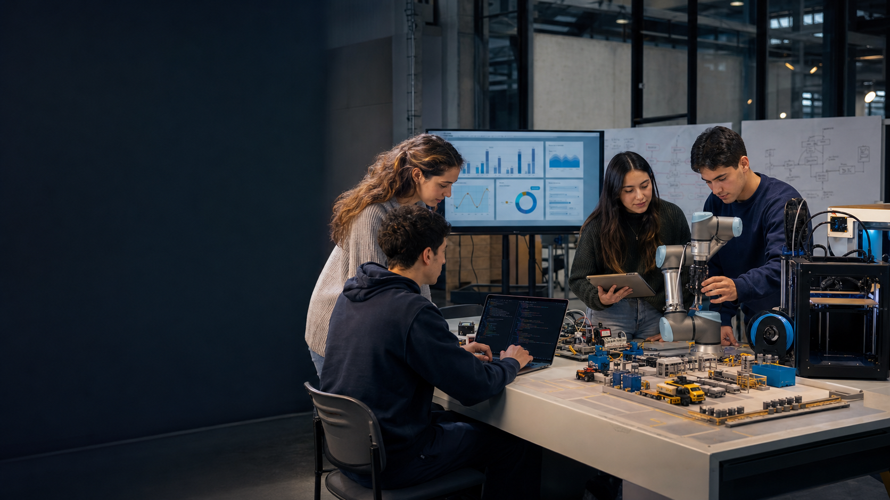
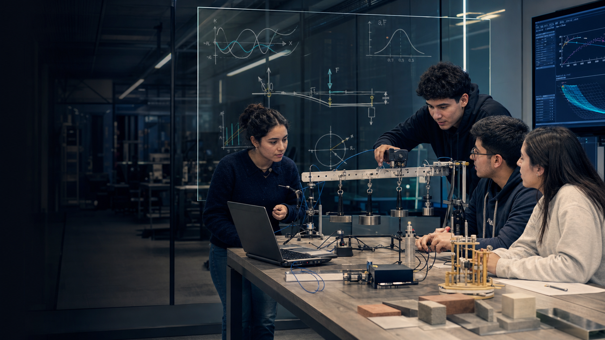
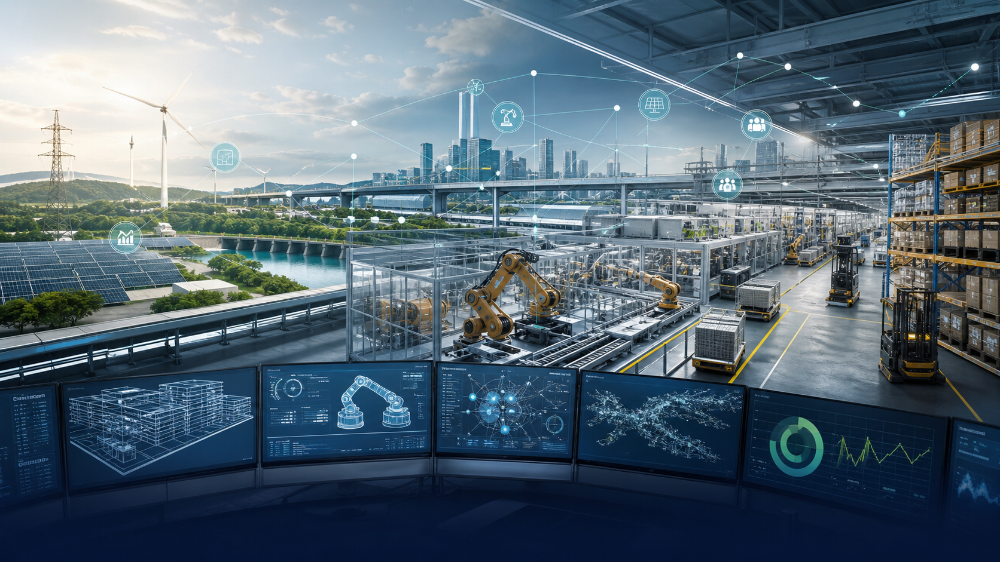
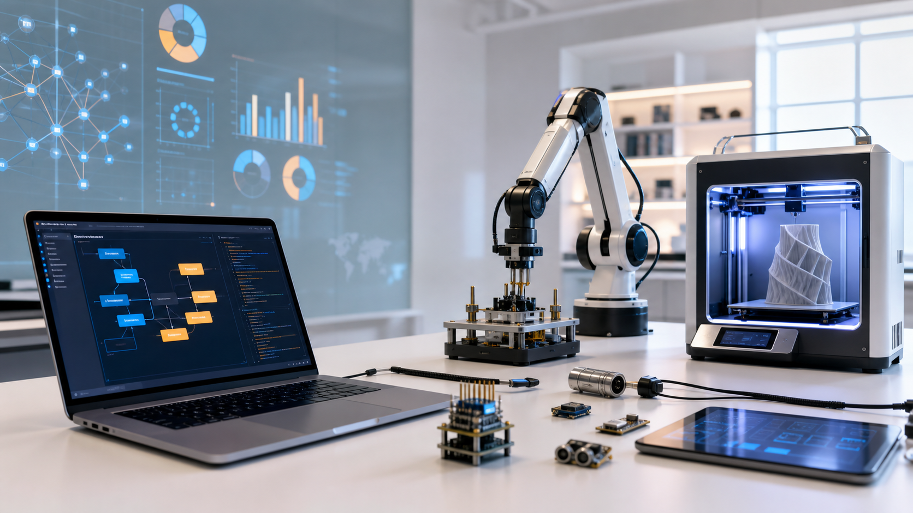

Personas, contexto y necesidad.

¿Ser o no ser
ingeniero?
Pensar con ciencia. Diseñar con criterio. Responder por el impacto.
Una conversación sobre ingeniería, sistemas y los desafíos del siglo XXI.
El punto de partida
La ingeniería comienza cuando un problema importa
Una decisión debe funcionar bajo restricciones reales: seguridad, tiempo, costo, recursos e impacto.
Qué es ingeniería
Transformar conocimiento en soluciones que funcionan
Aplica ciencias, matemáticas y tecnología para diseñar dentro de restricciones.
Datos, ciencia y restricciones.
Sistemas, procesos o productos.
Medir, iterar y aprender.
Seguridad, impacto y ética.
Diseñar es decidir: siempre existen alternativas, riesgos y compromisos.
Ser ingeniero
No es saber todas las respuestas. Es saber cómo construir una respuesta.
El oficio combina rigor intelectual, imaginación práctica y responsabilidad profesional.
Preguntar por qué ocurre y qué evidencia falta.
Modelar supuestos y comprobar antes de afirmar.
Imaginar alternativas que aún no existen.
Asumir efectos sobre personas y entorno.

La base que permite comprender
Las ciencias básicas enseñan a leer la realidad
Convierte intuiciones en modelos que pueden ponerse a prueba.
Cálculo
Pensar en cambio, acumulación y óptimos
Detrás de cada sistema dinámico existe una pregunta: ¿cómo cambia y dónde conviene actuar?
Cambio
Velocidad, crecimiento y variación.
Acumulación
Energía, costo, demanda y tiempo.
Optimización
La mejor alternativa bajo límites.
Dinámica
Cómo evoluciona un sistema.
Física y mecánica
La realidad impone leyes: fuerzas, energía, movimiento y materiales
La mecánica permite reconocer límites físicos antes de diseñar.
¿Qué fuerzas debe resistir?
¿Qué se transforma y qué se pierde?
¿Cómo evoluciona en el tiempo?
¿Cuándo deja de ser seguro?
Álgebra y estadística
Modelar también significa convivir con la incertidumbre
El álgebra representa relaciones; la estadística permite aprender de datos incompletos y decidir con riesgo.
Representar variables que interactúan.
Describir lo que puede ocurrir.
Separar patrón, variabilidad y ruido.
Predecir sin confundir correlación con causa.
El puente
La ciencia explica. La ingeniería decide. La tecnología ejecuta.
Juntas convierten una idea en una solución repetible, medible y escalable.
Reconocer el fenómeno y la necesidad.
Representar relaciones y restricciones.
Comparar alternativas antes de intervenir.
Convertir una hipótesis en algo comprobable.
Aprender del impacto real.

Qué es un ingeniero civil industrial
Diseña y mejora sistemas donde interactúan personas, procesos y tecnología
Su objeto no es una máquina aislada: es el desempeño del sistema completo.
Capacidades, coordinación y decisiones.
Flujo, capacidad y calidad.
Automatización e información.
Tiempo, energía y capital.
Pensamiento sistémico
Un hospital no necesita más esfuerzo. Necesita un mejor sistema.
La pregunta cambia: de “¿quién trabaja más?” a “¿cómo coordinamos mejor?”.
Síntomas
Esperas largas
Turnos saturados
Información fragmentada
Recursos mal coordinados
Decisiones de sistema
Modelar la demanda
Cuándo y dónde se forman colas.
Rediseñar el flujo
Qué pasos agregan valor.
Asignar capacidad
Equilibrar recursos y servicio.
Medir el impacto
Tiempo, costo, calidad y experiencia.
Las cinco miradas de Industrial
Una mejora debe funcionar técnica, económica y humanamente
Optimizar una parte puede empeorar el conjunto.

Tecnología como amplificador
Multiplica la capacidad de experimentar
No define el problema ni asume las consecuencias.
El método importa
Una tecnología no es una solución hasta superar una prueba de ingeniería
Debe demostrar qué problema resuelve, bajo qué condiciones y con qué riesgos.
¿Qué necesidad existe?
¿Qué datos sostienen el diagnóstico?
¿Qué otras soluciones son posibles?
¿Seguridad, costo, tiempo, ética?
¿Cómo sabremos que funcionó?
Desafíos del siglo XXI
Los grandes desafíos ya son sistemas conectados
No pueden resolverse desde una sola disciplina.
Trabajo, IA y aprendizaje continuo
El siglo XXI eleva el estándar del criterio ingenieril
La automatización cambia tareas; formular problemas, evaluar riesgos y decidir sigue siendo humano.
Transformación
de los empleos cambiarían estructuralmente hacia 2030.
Habilidades
de las capacidades requeridas podrían transformarse.
Colaboración
Máquinas para ampliar análisis; humanos para propósito y juicio.
Aprendizaje
Aprender a aprender será una competencia permanente.
Fuente: World Economic Forum, Future of Jobs Report 2025.
Una referencia de formación
Este modo de pensar se construye con capas que se conectan
El plan de estudios respalda la secuencia; no es el centro de esta conversación.
Cálculo · Álgebra · Física · Mecánica · Estadística.
Programación · Datos · Optimización · Simulación.
Operaciones · Logística · Calidad · Finanzas.
Innovación · Personas · Proyectos · Sostenibilidad.
Ciencias básicas primero; integración y aplicación después.
Ser ingeniero
Comprender antes de intervenir.
Diseñar antes de prometer.
Medir antes de afirmar.
Cada solución transforma un sistema, una organización y la vida de personas reales.
La pregunta final no es solo qué puede hacer la tecnología. Es qué futuro vale la pena construir.